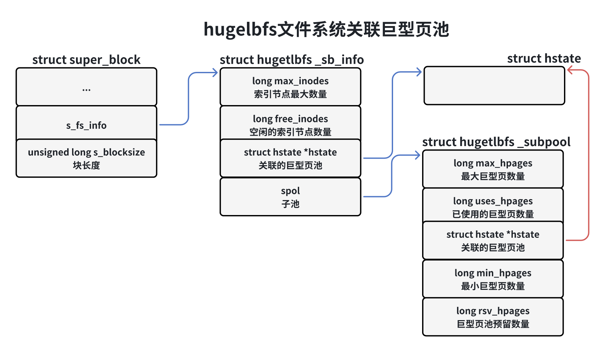
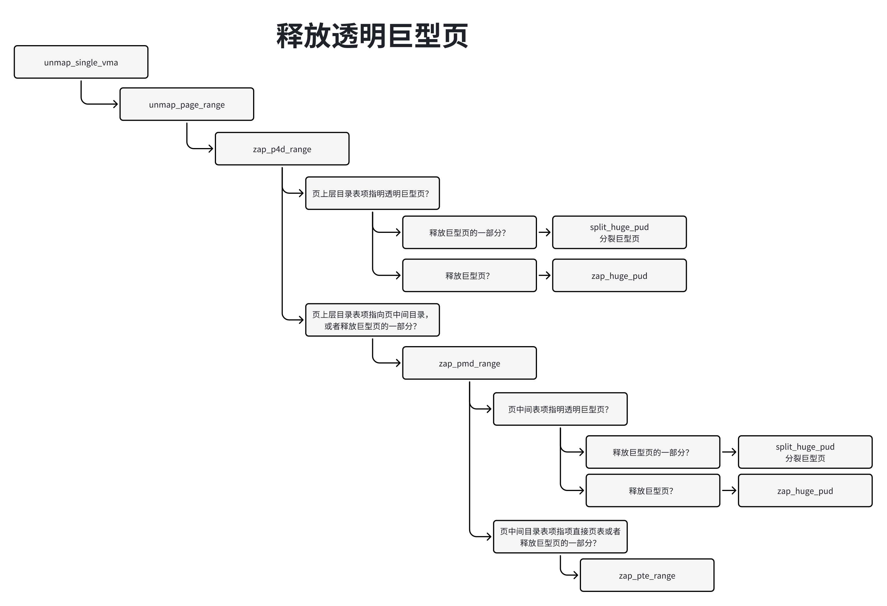

巨型页
一、处理器对巨型页的支持
当运行内存需求量较大的应用程序时，如果使用长度为4KB的页，将会产生较多的TL未命中和缺页异常，严重影响应用程序的性能。如果使用长度为2MB甚至更大的巨型页，可以大幅度减少TLB未命中和缺页异常的数量，大幅度提高影城程序的性能。这正式内核引入巨型页（Huge Page）的直接原因。
巨型页首选需要处理器支持，然后需要内核支持，内核有两种实现方式：
1）使用hugetlbfs伪文件熊实现巨型页。hugetbfs文件系统是一个假的文件系统，只是利用了文件系统的变成接口。使用hugetbfs文件系统实现的巨型页称为hugetbfs巨型页、传统巨型页或标准巨型页，通称为巨型页。
2）透明巨型页。标准巨型页的优点是预先分配巨型页到巨型页池，进程申请巨型页的时候从巨型页池取，成功的概率很高，缺点是应用程序需要使用文件系统的编程接口。透明巨型页的优点是对应用程序透明，缺点是动态分配，在内存碎片化的时候分配成功的概率很低。
ARM64处理器支持巨型页的方式有两种。
1）通过块描述符支持。
2）通过页/块描述符的连续位支持。
通过块描述符支持
如下图所示，如果页长度是4KB，那么使用4级转换表，0级转换表不能使用块描述符，1级转换表的块描述符指向1GB巨型页，2级转换表的块描述符指向2MB巨型页。
如果页长度是16KB，那么使用4级转换表，0级转换表不能使用块描述符，1级转换表不能使用块描述符，2级转换表的块描述符指向32MB巨型页。
如果页长度是64KB，那么使用3级转换表，1级转换表不能使用块描述符，2级转换表的块描述符指向512MB巨型页。
通过页/块描述符的连续位支持巨型页
页/块描述符中的连续位表项是一个连续表项集合中的一条表项，一个连续表项集合可以被缓存在一条TLB表项里面。通俗的说，进程申请了n页的虚拟内存区域，然后申请了n页的物理内存区域，使用n个连续的页表项把每个虚拟页映射到物理页，每个页表项设置了连续标志位，当处理器的内存管理单元遍历内存中页表时，访问到n个页表项重点额任何一个页表项，发现页表设置了连续标志位，就会把n个页表项合并以后填充到一个TLB表项。当然n不是随意算着的，而且n页的虚拟内存区域的其实地址必须是n页的整数倍，n页的物理内存区域的其实地址必须是n页的整数倍。
如下图所示，如果页长度是4KB，那么使用4级转换表，1级转换表的块描述符不能使用连续位，2级转换表的块描述符支持16个连续快，即支持（16 x 2MB == 32MB）巨型页；3级转换表的页描述符支持16个连续页，即支持（16 x 4Kb = 64KB）巨型页。
如果页长度是16KB，那么使用4级转换表，2级转换表的块描述符支持32个连续块，即支持（32 x 32MB = 1GB）巨型页；3级转换表的页描述符支持128个连续页，即支持（128 x 16KB = 2MB）巨型页。
如果页长度是64KB，那么使用3级转换表，2级转换表的块描述符不能使用连续位；3级转换表的页描述符支持32个连续页，即支持（32 x 64KB = 2MB）巨型页。
二、标准巨型页
使用方法
编译内核时需要打开配置宏CONFIG_HUGETLBFS和CONFIG_HUGETLB_PAGE（打开配置宏CONFIG_HUGETLBFS的时候会自动打开）。
通过文件”/proc/sys/vm/nr_hugepages“指定巨型页池中永久巨型页的数量，预先分配指定数量的永久巨型页到巨型页池中。另一种是在引导内核时指定内核参数”hugepages = N“以分配永久巨型页，这是分配巨型页最可考的方法，因为内存没有碎片化。
有些平台支持多种巨型页长度。如果是分配特定的长度的巨型页，必须在内核参数”hugepages“前面添加选择巨型页长度的参数”hugegepagesz=
通过文件”/proc/sys/vm/nr_overcommit_hugepages“指定巨型页池中临时巨型页的数量，当永久巨型页用完的时候，可以从页分配器申请临时巨型页。
nr_hugepages是巨型页池的最小长度，（nr_hugepages + nr_overcommit_hugepages）是巨型页池的最大长度。这两个参数默认值是0，至少是设置一个，不然分配巨型页会失败。
创建匿名巨型页映射代码如下：
1addr = mmap(0, MAP_LENGTH, PROT_READ | PROT_WRITE,3 MAP_ABIBTMOUS | MAP_HUGETLB, -1, 0);如果创建基于文件的巨型页映射，首先管理员需要再某个目录下挂载hugetlbfs文件系统：
31mount -t hugetlbfs \ 2 -o uid=<value>,gid=<value>, mode=<value>, pagesize<value>, size=<value>,\3 min_size = <value>, nr_inodes=<value> none<目录>各选项的意思如下：
1）选项uid和gid指定文件系统的根目录的用户和组，默认去当前进程的用户和组。
2）选项mode指定文件系统的根目录的模式，默认值是0755。
3）如果平台允许支持多种巨型页长度，可以使用选项pagesize指定巨型页长度和关联的巨型页池。如果不使用选项pagesize，表示使用默认的巨型页长度。
4）选项size指定运行文件系统使用的巨型页的最大数量。如果不指定选项size表示没有限制。
5）选项minz_size指定允许文件系统使用的巨型页的最小数量，挂载文件系统的时候吗，申请巨型页池为这个文件系统预留选项min_size指定的巨型页数量。如果不指定选项min_size，表示没有限制。
6）选项nr_inodes指定文件系统中文件（一个文件对应一个索引节点）的最大数量。如果不指定选项nr_inodes表示没有限制。
假设在目录”mnt/huge“下挂载了hugetlbfs文件系统，应用程序zaihugetlbfs文件系统中创建文件，然后创建基于文件的内存映射，这个内存映射就会使用巨型页。
31fd = open("/mnt/huge/test", O_CREAT | O_RDWR, S_IRWXU);3addr = mmap(0, MAP_LENGTH, PROT_READ | PROT_WRITE, MAP_SHARED, fd, 0);应用程序库可以使用开源的hugetlbfs库，这个库对hugetlbfs文件系统做了封装。使用hugetlbfs库的好处：
1）启动程序时使用换将变量”LD_PRELOAD = libhugetlbfs.so“把hugelbfs库设置成优先级最高的动态库，malloc()使用巨型页，对应用程序完全透明，应用程序不需要修改代码。
2）可以把代码段、数据段和未初始化数据段都放在巨型页中。
执行命令”cat/proc/meminfo“可以看到巨型页的信息：
61...2HugePages_Total: vvv3HugePages_Free: www4HugePages_Rsvd: xxx5HugePages_Surp: yyy6HugePagesize: zzz KB1）HugePages_Total：巨型页池的大小。
2）HugePages_Free：巨型页池中没有分配的巨型页的数量。
3）HugePages_Rsvd：”Rsvd“是Reserved缩写，就是预留，是已经承诺从巨型页池中分配但是没有分配的巨型页的数量。预留的巨型页保证应用程序在发生缺页异常的时候能够从巨型页池中分配一个巨型页。
4）HugePages_Surp：”Surp“是Surplus的缩写，多余的，是巨型页池中临时巨型页的数量，临时巨型页的数量由”/proc/sys/nr_overcommit_hugepages“控制。
5）Hugepagesize：巨型页的大小。
实现原理
巨型页池
内核使用巨型页池管理巨型页，有的处理器架构支持多种巨型页长度，每种巨型页长度对应一个巨型页池，有一个默认的巨型页长度，默认ARM64架构在页长度为4KB的时候支持的巨型页长度是1GB、32MB、2MB和64KB，默认的巨型页长度是2MB，默认只创建页长度是2MB的巨型页池。 如果需要创建不同长度的巨型页，可以在引导内核时指定内存参数”hugepagesz =
巨型池的数据结构是结构体hstate，全局数组的hstates是巨型页池数组，全局变量hugetlb_max_hstate时巨型页池的数量，全局变量default_hsyaye_idx时默认巨型池的索引。
x1// 位置：mm/hugetlb.c2
3int hugetlb_max_hstate __read_mostly;4unsigned int default_hstate_idx;5struct hstate hstates[HUGE_MAX_HSTATE];巨型页池中的巨型页分为两种：
1）永久巨型页：永久巨型页是保留的，不能有其他用途，被预先分配到巨型页池，当进程释放永久巨型页的时候，永久巨型页被归还到巨型页池。
2）临时巨型页：也叫多余的（surplus）巨型页，当永久巨型页用完的时候，可以从业分配器分配临时巨型页；进程释放临时的巨型页的时候，直接释放到页分配器。当设备长时间运行后，内存可能碎片化，分配临时巨型页可能失败。
巨型页池的数据结构主要成员如下：
| 成员 | 说明 |
|---|---|
| char name[HSTATE_NAME_LEN] | 巨型页池的名称，格式是“hugepages |
| unsigned int order | 巨型页的长度，页的阶数 |
| unsigned long mask | 巨型页页号的掩码，将虚拟地址和掩码按位与，得到巨型页页号 |
| unsigned long max_huge_pages | 永久巨型页的最大数量 |
| unsigned long nr_overcommit_huge_pages | 临时巨型页的最大数量 |
| unsigned long nr_huge_pages | 巨型页的数量 |
| unsigned long nr_huge_pages_node[MAX_NUMNODES] | 每个内存节点中巨型页的数量 |
| unsigned long surplus_huge_pages | 临时巨型页的数量 |
| unsigned int surplus_huge_hpage_node[MAX_NUMNODES] | 每个内存节点临时巨型页的数量 |
| unsigned long free_huge_pages | 空闲巨型页的数量 |
| unsigned int free_huge_pages_node[MAX_NUMNODES] | 每个内存节点中空闲巨型页的数量 |
| unsigned long resv_huge_pages | 预留巨型页的数量，已经承诺要分配但还没有分配 |
| struct list_head hugepage_freelists[MAX_NUMNODES] | 每个内存节点一个空闲巨型页链表 |
| struct list_head hugepage_activelist | 把分配出去的巨型页链接起来 |
| int next_nid_to_alloc | 分配永久巨型页并添加到巨型页池中的时候，在运行的内存节点集合中轮流从乜咯内存节点分配永久巨型页，这个成员用来记录下次从哪个内存节点分配永久巨型页 |
| int next_nid_to_free | 从巨型页释放空闲巨型页的时候，在运行内存节点集合中轮流从每个内存节点释放巨型页，这个成员用来记录哪个内存节点释放巨型页 |
预先分配永久巨型页
预先分配指定数量的永久巨型页到巨型页池中有两种方法。
1）最可可靠的方法是引导内核时指定内核参数“hugepages = N”来分配永久巨型页因为内核初始化的时候内存没有碎片化。
有些处理器架构支持多种巨型页长度。如果分配特定长度的巨型页，必须在内核参数“hugepages”前面添加选择巨型页长度的参数“hugepagesz=
2）通过文件“/proc/sys/vm/nr_hugepages”指定默认长度的永久巨型页的数量。
内核参数“hugepages = N”的处理器函数是hugetlb_nrpages_setup代码如下：
461// 位置：mm/hugetlb.c2
3static int __init hugetlb_nrpages_setup(char *s)4{5 unsigned long *mhp;6 static unsigned long *last_mhp;7
8 // 内核参数“huegpagesz=”指定的巨型页长度是非法的，直接返回9 if (!parsed_valid_hugepagesz) {10 pr_warn("hugepages = %s preceded by "11 "an unsupported hugepagesz, ignoring\n", s);12 parsed_valid_hugepagesz = true;13 return 1;14 }15
16 // 如果前面没有内核参数“hugepagesz=”，那么内核参数“hugepages=”17 // 指定默认巨型页池的永久巨型页的数量18 else if (!hugetlb_max_hstate)19 mhp = &default_hstate_max_huge_pages;20 21 // 如果前面内核参数“hugepagesz=”指定巨型页长度，那么内核参数“hugepages=”22 // 指定巨型页长度对应的巨型页池的永久巨型页的数量23 else24 mhp = &parsed_hstate->max_huge_pages;25
26 if (mhp == last_mhp) {27 pr_warn("hugepages= specified twice without interleaving hugepagesz=, ignoring\n");28 return 1;29 }30
31 // 解析并保存内核参数“hugepagesz=”的值32 if (sscanf(s, "%lu", mhp) <= 0)33 *mhp = 0;34
35 // 如果前面有内核参数“hugepagesz=“指定巨型页长度，并且巨型页长度36 // 超过页分配器支持的最大阶数，那么需要从阴道内存分配器分配巨型页37 // 如果巨型页长度或等于页分配器支持的最大阶数，巨型页系统在初始化的时候38 // 从页分配器分配巨型页39 if (hugetlb_max_hstate && parsed_hstate->order >= MAX_ORDER)40 hugetlb_hstate_alloc_pages(parsed_hstate);41
42 last_mhp = mhp;43
44 return 1;45}46__setup("hugepages=", hugetlb_nrpages_setup);函数hugetlb_hstate_alloc_pages负责预先分配指定数量的永久巨型页，代码如下：
191// mm/hugetlb.c2
3static void __init hugetlb_hstate_alloc_pages(struct hstate *h)4{5 unsigned long i;6
7 for (i = 0; i < h->max_huge_pages; ++i) {8 // 如果巨型页长度超过页分配器支持的最大阶数，那么从阴道内存分配器分配巨型页9 if (hstate_is_gigantic(h)) {10 if (!alloc_bootmem_huge_page(h))11 break;12 13 // 如果巨型页长度小于或等于页分配器支持的最大阶数，那么从页分配器分配巨型页14 } else if (!alloc_fresh_huge_page(h,15 &node_states[N_MEMORY]))16 break;17 }18 h->max_huge_pages = i;19}函数alloc_bootmem_huge_page负责从阴道内存分配器分配巨型页，代码如下：
291// mm/hugetlb.c2
3int __weak alloc_bootmem_huge_page(struct hstate *h)4{5 struct huge_bootmem_page *m;6 int nr_nodes, node;7
8 for_each_node_mask_to_alloc(h, nr_nodes, node, &node_states[N_MEMORY]) {9 void *addr;10
11 // 从内存节点分配巨型页12 addr = memblock_virt_alloc_try_nid_nopanic(13 huge_page_size(h), huge_page_size(h),14 0, BOOTMEM_ALLOC_ACCESSIBLE, node);15 if (addr) {16
17 m = addr;18 goto found;19 }20 }21 return 0;22
23found:24 BUG_ON(!IS_ALIGNED(virt_to_phys(m), huge_page_size(h)));25 // 先把他们放到私有链表中，因为mem_map还没有准备好26 list_add(&m->list, &huge_boot_pages);27 m->hstate = h;28 return 1;29}在巨型页子系统初始化时，把链表huge_boot_pages中的巨型恶意添加到对应的巨型页池中，代码如下：
291// 调用链路：hugetlb_init()->gather_bootmem_prealloc()2// 位置：mm/hugetlb.c3
4static void __init gather_bootmem_prealloc(void)5{6 struct huge_bootmem_page *m;7
8 list_for_each_entry(m, &huge_boot_pages, list) {9 struct hstate *h = m->hstate;10 struct page *page;11
12 page = pfn_to_page(m->phys >> PAGE_SHIFT);14 memblock_free_late(__pa(m),15 sizeof(struct huge_bootmem_page));16 page = virt_to_page(m);18 WARN_ON(page_count(page) != 1);20 // 把巨型页组合成复合页21 prep_compound_huge_page(page, h->order);22 WARN_ON(PageReserved(page));23 // 把巨型页添加到对应的巨型页池中24 prep_new_huge_page(h, page, page_to_nid(page));25
26 if (hstate_is_gigantic(h))27 adjust_managed_page_count(page, 1 << h->order);28 }29}如果巨型页长度小于或等于页分配器支持的最大阶数，那么在巨型页子系统初始化时从页分配器预先从分配永久巨型页，代码如下：
191// 调用链路：hugetlb_init()->hugetlb_init-hstates()2
3// 位置：mm/hugetlb.c4
5
6static void __init hugetlb_init_hstates(void)7{8 struct hstate *h;9
10 for_each_hstate(h) {11 if (minimum_order > huge_page_order(h))12 minimum_order = huge_page_order(h);13
14 /* 长度超过页分配器支持的最大阶数的巨型页已经从阴道内存分配中分配 */15 if (!hstate_is_gigantic(h))16 hugetlb_hstate_alloc_pages(h);17 }18 VM_BUG_ON(minimum_order == UINT_MAX);19}针对每个巨型页池，如果巨型页长度小于或等于页分配器支持的最大结束，那么从页分配器分配永久巨型页，添加到巨型页池中。
文件”/proc/sys/vm/nr_hugepages“的处理函数是hugetlb_sysctl_handler，最终调用函数set_max_huge_pages来增加或减少永久巨型页，代码如下：
651// 调用链路： hugetlb_sysctl_handler()->hugetlb_sysctl_handler_common()2// -> __nr_hugepages_store_common() -> set_max_huge_pages()3
4// 内存位置：mm/hegetlb.c5
6// 参数count指定永久巨型页的最大数量7static unsigned long set_max_huge_pages(struct hstate *h, unsigned long count,8 nodemask_t *nodes_allowed)9{10 unsigned long min_count, ret;11
12 if (hstate_is_gigantic(h) && !gigantic_page_supported())13 return h->max_huge_pages;14
15 spin_lock(&hugetlb_lock);16 // 如果临时交互性页，那么把临时巨型页转换为永久巨型页17 while (h->surplus_huge_pages && count > persistent_huge_pages(h)) {18 if (!adjust_pool_surplus(h, nodes_allowed, -1))19 break;20 }21 22 // 如果永久巨型页的数量不够的话处理23 while (count > persistent_huge_pages(h)) {24
25 spin_unlock(&hugetlb_lock);26 // 让处理器，避免死锁（soft lookup）27 cond_resched();28
29 if (hstate_is_gigantic(h))30 ret = alloc_fresh_gigantic_page(h, nodes_allowed);31 else32 ret = alloc_fresh_huge_page(h, nodes_allowed);33 spin_lock(&hugetlb_lock);34 if (!ret)35 goto out;36
37 // 去处理信号，用户可能按下ctrl+c组合键38 if (signal_pending(current))39 goto out;40 }41
42 // min_count = (巨型页总数 - （空闲页数量-预留页数量）)即扣除没有预留的空闲巨型页43 // 注意预留巨型页数量包含在空闲巨型页数量里面，进程创建内存映射的时候已经申请了预留巨型页44 min_count = h->resv_huge_pages + h->nr_huge_pages - h->free_huge_pages;45 // min_count不能小于count46 min_count = max(count, min_count);47 // 如果支持高端内存区域，优先把从低端内存区域分配的没有预留的空闲巨型页归还给页分配器48 try_to_free_low(h, min_count, nodes_allowed);49 // 如果永久巨型页的数量超过min_count，那么把没有预留的空闲巨型页归还给页分配器50 while (min_count < persistent_huge_pages(h)) {51 if (!free_pool_huge_page(h, nodes_allowed, 0))52 break;53 cond_resched_lock(&hugetlb_lock);54 }55 56 // 如果永久巨型页的数量超过指定的最大数量，把永久巨型页转换为临时巨型页57 while (count < persistent_huge_pages(h)) {58 if (!adjust_pool_surplus(h, nodes_allowed, 1))59 break;60 }61out:62 ret = persistent_huge_pages(h);63 spin_unlock(&hugetlb_lock);64 return ret;65}挂载hugetlbfs文件
hugelbfs文件系统在初始化的时候，调用函数register_filessystem以注册hugetlbfs文件系统，hugelbfs文件系统的结构如下：
91// 位置：fs/hugelbfs/inode.c2
3static struct file_system_type hugetlbfs_fs_type = {4 .name = "hugetlbfs",5 .mount = hugetlbfs_mount,6 .kill_sb = kill_litter_super7 8 ...9};挂载hugetlbfs文件系统的时候，挂载函数调用hugelbfs文件系统的挂载函数huhelbfs_mount，创建超级块和根目录，把文件系统和巨型页池关联起来。
如下图所示，超级块的成员s_fs_info指向hugetblfs文件系统的私有信息：成员s_blocksize是块长度，被设置为巨型页的长度。

结构体hugelbfs描述hegeblfs文件系统的私有信息。
1）成员max_inode：允许索引的节点最大数量；
2）成员free_inodes：是空闲的索引节点数量；
3）成员hstate：指向关联的巨型页池；
4）如果指定了最大巨型页数量或最小巨型页数量，那么为巨型页池创建一个子池，成员spool指向子池。
结构体hugepage_supool描述子池信息。
1）成员max_huges：允许最大巨型页数量；
2）成员used_hpages：是已使用的巨型页数量，包括分配的和预留的；
3）成员hstate：指向巨型页池；
4）成员rsv_hpages：是子池向巨型页池申请预留的巨型页的数量；
创建文件
调用系统调用open()，在hugelbfs文件系统的一个目录下创建一个文件的时候，系统调用open最终调用函数hugetlbfs_create()伪文件分配索引节点（结构体inode）并且初始化，索引节点的成员i_fop指向hugetlbfs的文件操作集合hugelbfs_file_operations，这个文件操作集合的成员mmap方法是函数hugetbfs_file_mmap()，这个函数在创建内存映射的时候很关键。
创建内存映射
在hugetlbfs文件系统中打开文件，然后基于这个文件创建内存映射，系统调用mmap将会调用函数hugetlbfs_file_mmap()。
函数hugetlbfs_file_mmap()的主要功能：
1）设置标准巨型页标志VM_HUGETLB和不允许扩展标志VM_DONTEXPAND。
2）虚拟内存区域的成员vm_ops指向巨型页特有的虚拟内存操作集合hugetlb_vm_ops。
3）检查文件的偏移是不是巨型页长度的整数倍。
4）调用函数hugetlb_reserve_pages()，向巨型页池申请预留巨型页。
函数hugetlb_reserve_pages()的主要功能如下：
1）如果设置标志位VM_NORESERVE指定不需要预留巨型页，直接返回；
2）如果共享映射，那么使用文件的索引节点的预留图（结构体resv_map）如下图所示，在预留图中查看从文件的其实偏移到结束偏移有哪些部分以前没有预留，计算需要预留的巨型页的数量N。
3）如果是私有映射，那么创建预留图，虚拟内存区域的成员vm_private_data指向预留图，并且设置标志HPAGE_RESV_OWNER指明该虚拟内存区域拥有这个预留，如下图所示，计算需要预留的巨型页的数量N=（文件的结束偏移 - 起始偏移），偏移的单位是巨型页长度。
虚拟内存区域的成员vm_private_data的最低两位用来存储标志位。
> 标志位HPAGE_RESV_OWNER：值为1，指明当前进程是预留的拥有者；
> 标志位HPAGE_RESV_UNMAPPED：值为2，对于私有映射，如果创建映射的进程在执行写时复制时分配巨型页失败，那么删除所有子进程的隐私个号，设置该标志，让子进程在发生页错误异常时被杀死。
4）如果文件系统创建了巨型页子池，计算子池需要向巨型页池申请预留的巨型页的数量，否则需要向巨型页池申请预留的巨型页的数量是N。
如果子池以前申请预留的巨型页数量大于或等于N，那么子池不需要向巨型页池申请预留。
如果子池以前申请预留的巨型页数量小于N，那么子池需要向巨型页池申请预留的数量等于（N - 子池以前申请预留的巨型页数量）。
5）向巨型页池申请预留指定数量的巨型页。
6）如果是共享映射，那么在预留图的区域链表中增加1个file_region实例，记录预留区域。
分配和映射到巨型页
第一访问巨型页的时候出发缺页异常，函数handle_mm_fault发现虚拟内存区域设置子标志VM_HUGETILB，调用巨型页的页错误处理函数hugetlbfs_fault。
函数hugetlbfs_fault发现页表是空表项，调用函数hugetlb_no_page以分配并且映射到巨型页。
函数hugetlbfs_no_page执行过程：
1）在文件的页缓存中根据文件的页偏移查找页。
2）如果在页缓存中没有找到页，调用函数alloc_huge_page以分配巨型页。如果是共享映射，那么把巨型页加入文件的页缓存，以便和其他进程共享页。
3）设置页表项。
4）如果是第一步在页缓存中找到页，映射是私有的，并且执行写操作，那么执行写时复制。
函数alloc_huge_page执行流程：
1）检查预留图，确定进程是否预留过要分配的巨型页。
2）如果进程没有预留巨型页，检查分配是否超过子池的限制。
3）从巨型页池中目标内存节点的空闲链表中分配永久巨型页。
4）如果分配永久巨型页失败，那么尝试从页分配器分配临时巨型页。
写时复制
假设进程1创建了私有的巨型页映射，然后进程1分叉生成进程2和进程3。其中一个进程试图写巨型页的时候，触发页错误异常，巨型页的页错误处理函数hugetlbfs_fault调用函数hugetlbfs_cow的执行过程如下：
1）如果只有一个虚拟页映射到该物理页，并且是匿名映射，那么不需要复制，直接修改页表项设置可写。
2）分配巨型页。
3）处理分配巨型页失败的情况。
如果触发页错误异常的进程是创建私有映射的进程，那么删除所有子进程的映射，为子进程的虚拟内存区域的成员vm_private_data设置标志HPAGE_RESV_UNMAPPED，让子进程发生页错误异常的时候被杀死。
如果触发页错误异常的进程不是创建私有映射的进程，返回错误。
4）把旧页的数据复制到新页。
5）修改页表项，映射到新页，并且设置可写。
三、透明巨型页
透明巨型页（Transparent Huge Page THP）对进程是透明的，吐过虚拟内存区域足够大，并且运行使用巨型页，那么内核在分配内存的时候首先选择分配巨型页，如果分配巨型页失败，回退分配普通页。
使用方法
透明巨型页的配置宏如下：
1）CONFIG_TRANSPARENT_HUGEPAGE：支持透明巨型页。
2）CONFIG_TRANSPARENT_HUGEPAGE_ALWAYS：总是使用透明巨型页。
3）CONFIG_TRANSPARENT_HUGEPAGE_MADVISE：只是进程使用madvise(MADV_HUGEPAGE)指定的虚拟地址范围内使用透明巨型页。
4）CONFIG_TRANSPARNET_HUGE_PAGECACHE：文件系统的页缓存使用透明巨型页。
可以在引导内核的时候通过内核参数开启或关闭透明巨型页：
1）transparent_hugepage = always
2）transparent_hugepage = madvise
3）transparent_hugepage = never
可以在运行过程中开启或关闭透明巨型页：
1）总是使用透明巨型页：
11echo always > /sys/kernel/mm/transparent_hugepage/enabled2）只在进程使用madivse(MADV_HUGEPAGE)指定的虚拟地址范围内使用透明巨型页。
11echo madivse > /sys/kernel/mm/transparnet_hugepage/enabled3）进制使用透明巨型页
11echo never > /sys/kernel/mm/transparent_hugepage/enabled分配透明巨型页失败的时候，页分配器采取什么消除内存碎片的粗略？可以配置下策略。
1）直接回收页，执行同步模式的内存碎片管理。
11echo always > /sys/kernel/mm/transparnet_hugepage/defrag2）异步回收页，执行异步模式的内存碎片整理。
11echo defer > /sys/kernel/mm/trahsparent_hugepage/defrag3）只针对madvise(MADV_HUGEPAGE)指定的虚拟内存区域，异步回收页，执行异步模式的内存碎片整理。
11echo defer + madvise > /sys/kernel/mm/transparent_hugepage/defrag4）只针对madivse（MADV_HUGEPAGE）指定的虚拟内存区域，直接回收页，执行同步模式的内存碎片整理。这是默认策略。
11echo madivse > /sys/kernel/mm/transparent_hugepage/defrag5）不采取任何策略。
11echo nerver > /sys/kernel/mm/transparent_hugepage/defrag
可以查看透明巨型页的长度，单位是字节：
11cat /sys/kernel/mm/transparent_hugepage/hpage_pmd_size透明巨型页扫描线程定期允许使用透明巨型页的虚拟内存区域，尝试把普通页合并成透明巨型页。
可以通过文件”/sys/kernel/mm/transparent_hugepage/khugepaged/pages_to_scam“配置每次扫描多少页（普通页），默认一个巨型页包含的普通页数量的8倍。
文件”/sys/kernel/mm/transparent_hugepage/khugepaged/scan_sleep_millisecs“配置两次扫描的时间间隔，单位是毫秒，默认是10秒。
系统调用madvise针对透明巨型页提供了两个Linux私有的建议值：
1）MADV_HUGEPAGE表示指定的虚拟地址范围允许使用透明巨型页。
2）MADV_NOHUGEPAGE—表示指定的虚拟地址范围不要合并巨型页。
实现原理
虚拟内存区域vm_area_struct的成员vm_flags增加了一下两个标志。
1）VM_HUGEPAGE表示允许虚拟内存区域使用透明巨型页，进程使用madvise（MADV_HUGEPAGE）给虚拟内存区域设置这个标志。
2）VM_NOHUGEPAGE表示不允许虚拟内存区域使用透明巨型页，进程使用madvise(MADV_NOHYGEPAGE)给虚拟内存区域设置这个标志。
注意：标志VM_HUGETLB表示允许使用标准巨型页。
虚拟内存区域满足以下条件才允许使用透明巨型页。
1）一下条件二选一
a）总是使用透明巨型页
b）只是进程使用madivse(MADV_HUGEPAGE)指定的虚拟地址范围内使用透明巨型页，并且虚拟内存区域设置了允许使用透明巨型页的标志。
2）虚拟内存区域没有设置不允许使用透明巨型页的标志。
假设一个虚拟内存区域允许使用透明巨型页，访问虚拟内存区域的时候，如果没有映射到物理页，那么生成页错误异常，页错误异常处理过程：
1）首先尝试在页上层目录分配巨型页。如果触发异常的虚拟地址所属的虚拟巨型页超出虚拟内存区域，或者分配巨型页失败，那么回退，尝试在页中间目录分配巨型页。
2）尝试在页中间目录分配巨型页，如果触发异常的虚拟地址所属的虚拟巨型页超过勋in诶存取，或者分配巨型页失败，那么回退，尝试分配普通页。
3）分配普通页
页上层目录级别的巨型页和页中间目录级别的巨型页仅仅大小不同，页上层目录级别的巨型页大。以页中间目录级别的为例说明，分配巨型页的时候，会分配直接页表把直接页表添加到页中间目录直接页表寄存器队列中。直接页表寄存队列有什么用？当释放巨型页的一部分时，巨型页分裂成普通页，需要从直接页表寄存队列取一个直接页表。直接页表寄存队列分两种情况。
1）如果每个页中间目录使用独立的锁，那么每个页中间目录一个直接页表寄存队列，头节点是页中间目录的页描述符成员pmd_hugep_pte如下图所示：

2）如果一个进程的所有页中间目录共用一个锁，那么每个进程一个直接表寄存队列，头节点是内存描述符的成员pmd_huge_pte：
内核有一个透明巨型页线程（khugepaged）定期扫描云讯使用透明巨型页的虚拟内存区域，尝试把普通页合并成巨型页。
在分配透明巨型页时，会把进程的内存描述符加入透明巨型页线程的扫描链表中，如果分配透明巨型页失败。，回退使用普通页，透明巨型页线程将会尝试把普通页合并成巨型页。
透明巨型页线程的数据结构如下图所示：
1）扫描游标khugepaged_scan：成员mm_head是扫描链表的头节点，扫描链表的成员是内存描述符插槽；成员mm_slot指向当前正在扫描的内存描述符插槽，成员address是即将扫描的下一个虚拟地址。
2）内存描述符插槽mm_slot：成员mm指向进程的内存描述符，成员hash用来加入散列表，成员mm_node用来加入扫描链表。
3）内存描述符插槽散列表mm_slotes_hash。
4）加入扫描表的内存扫描设置了标志MMF_VM_HUGEPAGE。
当进程使用mummap释放巨型页的一部分时，需要把巨型页分裂成普通页。以页中间目录级别的巨型页为例说明，执行过程：
1）先把巨型页分裂成普通页，从直接页表寄存队列取一个直接页表，页中间目录表项向直接页表，直接页表的每个表项巨型页中的一个普通页。
2）释放普通页，把直接页表项删除。
透明巨型页分裂前如下图所示：
透明巨型页分裂后如下图所示：
分配透明巨型页
函数handle_mm_fault是页错误异常处理程序的核心函数，如果触发异常的虚拟内存区域使用的普通页或透明巨型页，把主要工作委托给函数__handler_mm_fault，如下图所示：
函数_handler_mm_fault执行过程：
1）在页全局目录中查找表项。
2）在页四级目录中查找表项，如果页四级目录不存在，先创建页四级目录。
3）在页上层目录中查找，如果页上层目录不存在，先创建页上层目录。
4）如果页上层目录表项是空表项，并且虚拟内存区域允许使用透明巨型页，那么分配巨型页，页上层目录表项指向巨型页。如果触发异常的虚拟地址所属的虚拟巨型页超过虚拟内存区域，或者分配巨型页失败，那么回退使用页中间目录级别的巨型页。
5）如果页上层目录表项指向巨型页，表项没有设置写权限，但是虚拟内存区域有写权限，那么指向写时复制，如果分配巨型页失败，那么回退使用页中间目录级别的巨型页。
6）在页中间目录中查找表项，如果页中间目录不存在，先创建页中间目录。
7）如果页中间目录表项是空表项，并且虚拟内存区域允许使用透明巨型页，那么分配巨型页，页中间怒路表象指向巨型页。如果触发异常的虚拟地址所属的虚拟巨型页超出虚拟内存区域，或者分配巨型页失败，那么回退使用普通页。
8）如果哦也中间目录表项指向巨型页，表项没有设置写权限，但是虚拟内存区域有写权限，那么执行写时复制，如果分配巨型页失败，那么回退使用普通页。
9）在直接页表中分配并映射到普通页。
函数create_huge_pmd负责分配页中间目录级别的巨型页，执行流程如下图所示：

如果私有匿名映射，大勇函数do_huge_pmd_anonymous_page来处理。
如果触发异常的虚拟地址所属的虚拟巨型页超出虚拟内存区域，那么回退使用普通页。
调用函数anon_vma_prepare，为反向映射准备结构体anon_vma。
调用函数khugepaged_enter，把内存描述符添加到透明巨型页页线程的扫描链表中。
如果分配巨型页事变，回退使用普通页，透明巨型页页线程将会尝试百普通页合并成巨型页。
如果是读操作，并且允许使用巨型零页，那么映射到全局的巨型零页。
分配巨型页。
调用函数__do_huge_pmd_anonymous_page，设置页中间目录表项，映射到巨型页。
如果文件映射或者共享映射，调用虚拟内存区域的虚拟内存操作集合中的huge_fault方法来处理。
函数__do_huge_pmd_anonymous_page负责为私有匿名映射设置页中间目录表项，映射到巨型页，执行流程如下图所示：
分配直接页表。
把巨型页清零。
设置页描述的标志位PG_uptodate，表示物理页包含有效的数据。
锁住页表。
如果锁住页表以后发现页中间目录表项不是空表项，说明其他处理器正在竞争，已经分配并且映射到物理页，那么当前处理器放弃操作。
构造页中间目录表项的值。
为匿名巨型页添加反向映射。
把巨细胞工业添加到LRU链表中。
把直接页表添加到寄存队列中，当释放巨型页的一部分时，需要把巨型页分裂成普通页，从寄存器队列求出直接页表使用。
设置中间目录表象指向巨型页。
释放页表锁。
透明巨型页线程
透明巨型页线程负责定期扫描允许使用透明巨型页的虚拟内存区域，尝试把普通页合并成巨型页，执行流程如下图所示，每次从航次结束的位置继续扫描内存 描述符插槽链表，对扫描的页数（只普通页的数量）有限制，如果扫描的页数达到限制，睡眠一段时间后继续扫描。
函数khugepaged_do_scan的执行过程是如果扫描的页数没有达到限制，重复执行下面的步骤：
1）大勇函数khugepaged_prealloc_page，预先分配一个巨型页，在NUMA系统上函数khugeaged_prealloc_page不会分配巨型页，指向到函数collape_huge_page的时候才分配巨型页。
2）调用函数khuugepaged_scan_mm_slot，扫描一个内存描述符插槽，针对进程的乜咯虚拟内存区域如下过程：
-> 调用函数hugepage_vma_check，检查虚拟内存区域是否允许使用透明巨型页。
-> 如果共享内存，调用函数khugaged_scan_shmem来处理。
-> 如果不是共享内存，调用函数khugepaged_scan_pmd来处理。
函数khugepaged_can_pmd的执行过程是：如果页中间目录表项指向直接页表，至少一个页没有写权限，并且至少有一个页刚刚被访问，那么调用函数collapse_huge_page，把普通页合并成巨型页，如果全部是只读页，或者最近都灭有访问过，那么不会合并成巨型页。
函数collapse_huge_page负责把普通页合并成巨型页，执行流程如下图所示：
调用函数collapse_huge_page负责把普通页合并成巨型页。这个函数只会在NUMA系统上分配巨型页，如果不是NUMA系统，函数khugepaged_do_scan已经分配了巨型页。
部分普通页可能换出到交换区，需要把这些普通页从交换区读到内存中。
隔离准备合并的所有普通页。
把数据从普通页复制到巨型行页，释放普通页。
为巨型页添加反向映射。
把巨型页加入LRU链表。
把直接页提那家到寄存队列中。
设置页中间目录表项指向巨型页。
更新页表缓存。
释放透明巨型页
假设进程使用munmap释放虚拟内存区域，而这个虚拟内存区域可能映射到透明巨型页，可能是释放巨型页的一部分，也可能是释放整个巨型页。
函数unmap_single_vma负责删除一个虚拟内存区域，执行流程如下图所示，如果虚拟内存区域使用普通页或透明巨型页，把主要工作委托给函数unmap_page_range。

函数unmap_page_range负责处理页全局目录，针对每个需要删除的也全局目录表项，调用函数zap_p4d_range来处理页四级目录。
函数zap_p4d_range负责处理页四级目录，针对每个需要删除的页四级目录表项，调用函数zap_pud_range来处理衣蛾上层目录。
函数zap_pud_range负责处理页上层目录，针对每个需要删除的也上层目录表项，指向过程：
如果页上层目录表项指明透明巨型页，处理如下：
如果释放巨型页的一部分，那么调用函数split_huge_pud以分裂巨型页。
如果释放整个巨型页，那么调用函数zap_huge_pud以删除页上层目录表项，释放巨型页。
如果页上层目录表项指向页中间目录，或者释放巨型页的一部分，那么调用函数zap_pmd_range处理页中间目录。
函数zap_pmd_range负责处理页中间目录，针对每个需要删除的页中间目录表项，指向过程如下：
如果页中间目录指向透明巨型页处理如下：
如果释放巨型页的一部分，调用函数__split_huge_pmd以分裂巨型页。
如果释放整个巨型页，调用函数zap_huge_pmd删除页中间目录表项，释放巨型页。
如果页中间目录表象指向直接i页表，或者释放巨型页的一部分，调用函数zap_pte_range处理直接页表。
函数__split_huge_pmd负责把页中间目录级别的透明巨型页分裂成普通页，指向流程如下图所示：
把主要工作委托了函数__split_huge_pud_locked，执行过程：
如果是文件映射或者共享匿名映射，说明巨型页在文件的页缓存中，因为可能有多个进程go你修改，所以不能把巨型页分裂成普通页，只需要删除映射，处理如下：
删除页中间目录表项。
从寄存队列中取一个直接页表并删除。
删除反向映射。
把巨型页的引用拘束减1。
如果是私有匿名映射，映射到巨型零页，调用函数__split_huge_zero_pmd以分裂巨型零页。
如果是私有匿名映射，没有映射到巨型零页，把巨型页分裂成普通页，处理如下：
从寄存队列中取一个直接页表。
填充直接页表，每个表项指向巨型页中的一个普通页。
清除页中间目录页表。
页中间目录表项指向直接页表。